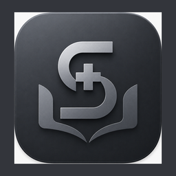
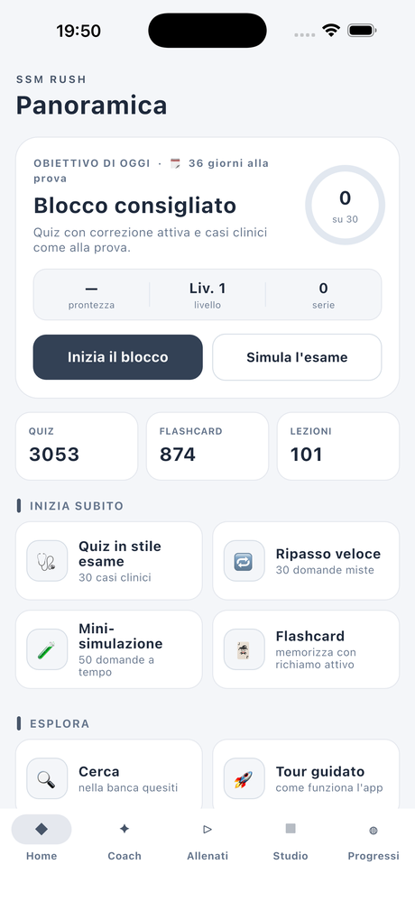
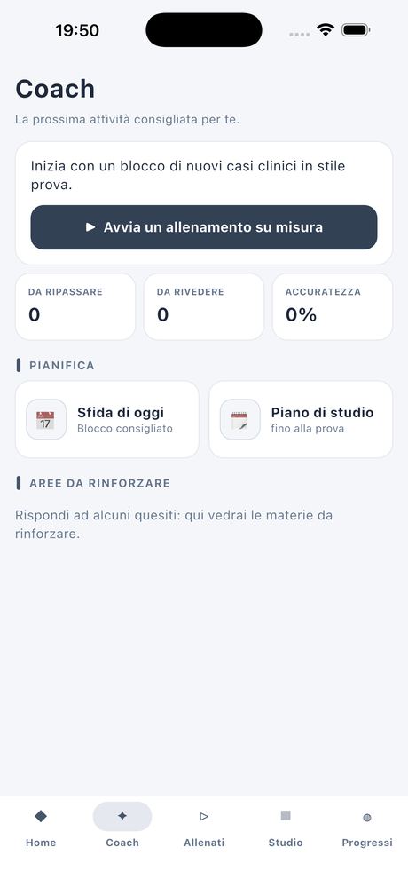
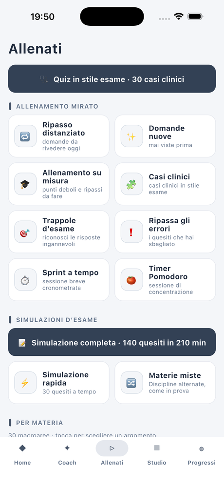
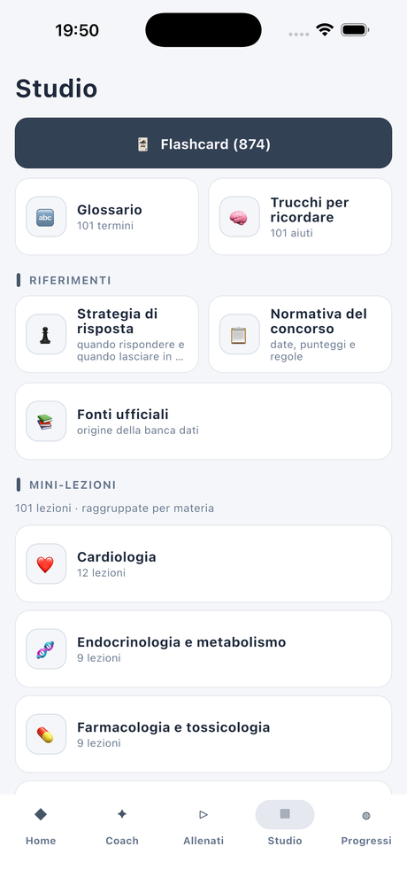
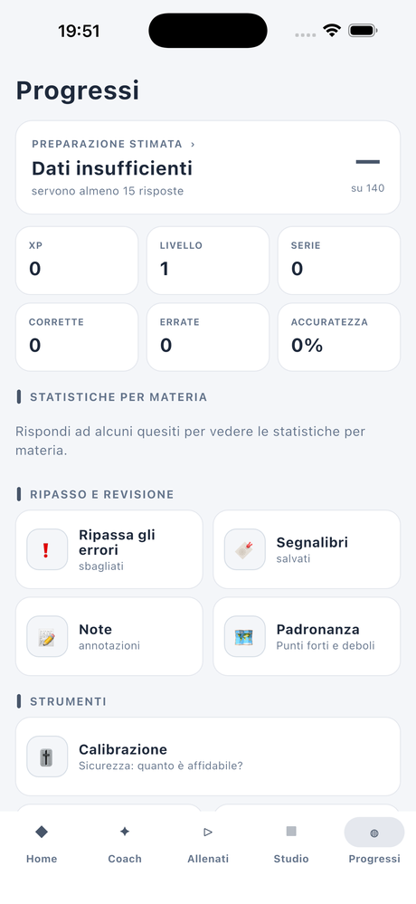

Lo sprint intelligente verso il concorso SSM.
Coach adattivo, simulazioni come la prova reale e ripasso distanziato — oltre 3.000 quesiti, tutto offline. Quesiti tarati un gradino sopra la prova: arrivi al concorso in vantaggio.
Non è l'ennesimo archivio di domande da scorrere a caso: ti dice cosa ripassare e ti allena come alla prova vera.
I quesiti sono pensati un gradino sopra la prova reale — distrattori curati e casi clinici realistici. È un allenamento volutamente esigente: se te la cavi qui, al concorso arrivi con un solido margine di vantaggio.
Ogni giorno sai cosa ripassare: l'app pianifica in base ai tuoi errori, ai quesiti “scaduti” e agli argomenti ancora scoperti.
I concetti tornano nel momento esatto in cui stai per dimenticarli, per fissarli nella memoria a lungo termine.
140 quesiti in 210 minuti, esattamente come al concorso, con gestione del tempo e calcolo del punteggio.
Paghi una volta e hai tutto, per sempre. Nessuna pubblicità, nessun account, nessun dato raccolto.
Memorizza con il metodo dell'active recall: flashcard divise per materia per fissare i concetti chiave.
Impara a riconoscere i distrattori più insidiosi — le risposte “quasi giuste” costruite apposta per farti sbagliare.
Scopri se sei troppo sicuro o troppo prudente e affina la strategia di risposta sui tuoi dati reali.
Ripassi rapidi, glossario e mnemonici per richiamare i concetti chiave proprio quando ti servono.
Un unico strumento per le settimane decisive.
Home, coach, allenamento, studio e progressi — scorri per dare un'occhiata.




